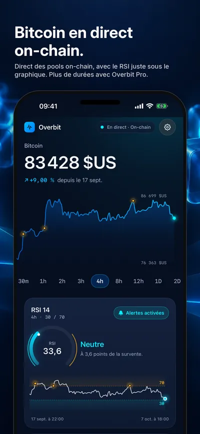
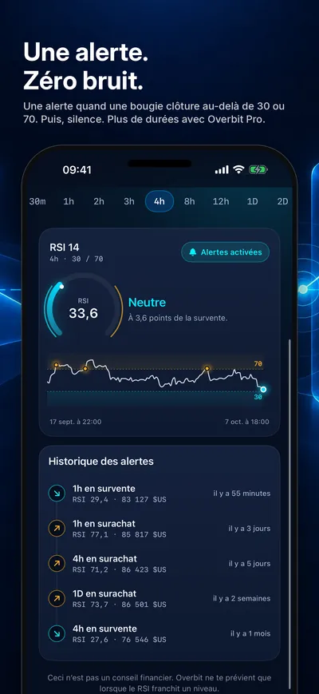
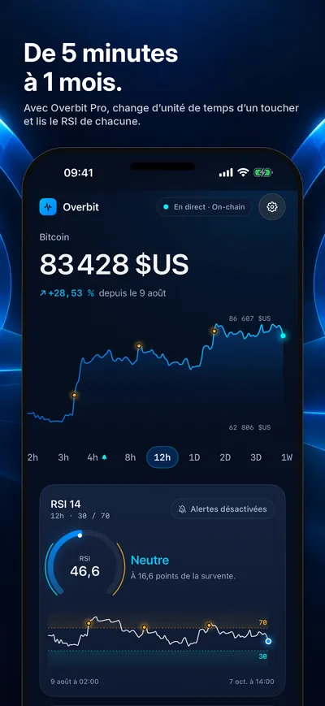
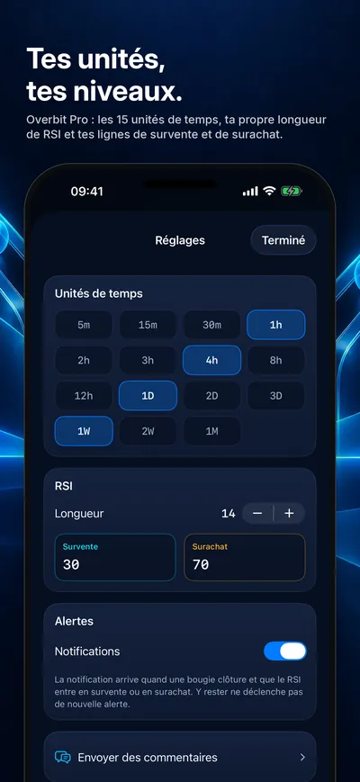
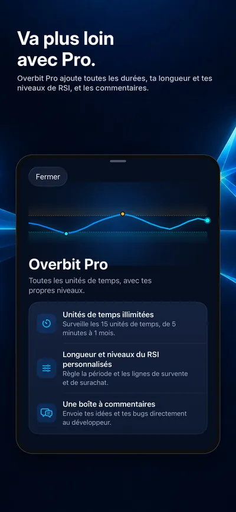

Seize Apps · iOS
Overbit
Overbit surveille un seul chiffre, le RSI du Bitcoin, et te prévient quand une bougie clôturée passe en survente ou en surachat. Une alerte par franchissement, et le silence tant que le RSI reste dans la zone. Le prix ne vient pas d’une plateforme d’échange : notre serveur lit des pools de trading publics on-chain (Bitcoin enveloppé contre le stablecoin USDC) et, si les pools divergent, les alertes des durées de 15 minutes ou moins se mettent en pause jusqu’à ce qu’ils s’accordent de nouveau. Overbit ne trade pas, ne détient rien pour toi et ne donne aucun conseil financier.





Ce qu’elle fait
Une seule chose, bien faite.
- 01 / SURVEILLER
Un écran, un chiffre
Le prix du Bitcoin en direct, un graphique de la durée choisie et dessous un panneau RSI avec les bandes 30 et 70 ombrées et les franchissements passés marqués. Appuie et fais glisser pour lire n’importe quelle bougie.
- 02 / ALERTER
Une alerte par franchissement
Une notification quand une bougie clôture au-delà de la ligne, envoyée en push même app fermée. La suivante n’arrive que quand le RSI quitte la zone puis y revient. Un historique liste chaque alerte envoyée.
- 03 / PRO
Toutes les durées, tes niveaux
De série, Overbit surveille une durée avec un RSI 14 et les niveaux 30 et 70. Overbit Pro, un achat unique, ouvre les 15 durées de 5 minutes à 1 mois et ta propre longueur et tes propres niveaux de RSI.
Confidentialité
À toi, pas à nous.
Overbit n’a pas de compte. Pour envoyer des alertes, il enregistre un identifiant d’installation aléatoire (et, alertes activées, ton jeton push et les durées surveillées) sur un serveur de Seize à Francfort ; Supprimer mes données, dans Réglages, efface cet enregistrement. Overbit inclut aussi RevenueCat, uniquement pour la mesure des achats. Sa section confidentialité détaille chaque point.
Une app de Seize Apps.